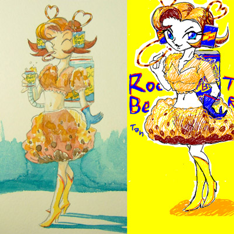

リコリスたんのお部屋
リコリスたんのお部屋【リコリス菓子】
リコリスたんは「リコリス菓子（Licorice）」の擬人化キャラです。
リコリスはもともと日本では甘草としてしられるマメ科の植物のことで、漢方の生薬にも使われます。かなり甘いので天然の甘味料としても使われています。それを使ったお菓子が「リコリス菓子」ですが、欧米ではリコリスと言えば、むしろこのリコリス菓子のことを指すくらいポピュラーです。
欧米ではいろんなタイプのリコリスが存在しますが、真っ黒でヒモ状のグミのような（ただし、普通のグミのようなイメージと違ってとても硬いです）このタイプが一般的なリコリスのイメージ。（ハリボ（Haribo）から出ている物が有名）
リコリスは甘いのですが、独特の薬臭い香気と、添加されている「塩化アンモニウム」のために吐きたくなるほどのゲロ不味いお菓子です。魔菓子。
妙な薬臭さにむっとするものの、食べ始めは甘いので「まあ、いけるかも」と思うのだが、たちどころに口内に広がる腐臭に悶絶することとなる。
欧米人はこれがみんな大好き・・・ということもないようで、洋ドラなどを注意深くみていると、ときおりリコリスにイヤな顔をしたりするのを見受けられる。好きな人は好きなようだが必ずしも万人に受け入れられている味というものでも無いようです。（ハリーポッターにもリコリス味のグミが登場し、ロンが不味さに悶絶するシーンなど）
このリコリス味が平気だったり、むしろ好ましく感じる特殊味覚の日本人もまれに存在する。
日本ではマイナーなお菓子なので、洋ドラ、洋画、カートゥーンなどで登場しても、翻訳ではただの「キャンディ」と訳されたりして「リコリス」の名で呼ばれる事はまれ。黒い（もしくは赤）キャンディやグミをみかけたら、それがリコリスである確率は高い。紐状や棒状だったりしたらまず間違いなくリコリスだろう。
その他、詳しくはwikipediaのリコリス菓子をどうぞ
ちなみにリコリスとカタカナで書くと同じだが、Lycorisというものもあり、こちらは彼岸花（ヒガンバナ）のことでまったく別物。花の名前ということでドラマなどで女性の名に使われることも多い。
リコリスの擬人化「リコリスたん」はanriさんが生み出したオリジナルキャラ。
オリジナルリコリスたんのanriさんのイラストサイト『Lico-mix』
ここから派生してリコリスたんワールドが広がった。
＞リコリスについてはblogのリコリスカテゴリで、いろいろ書いてます
関連リンク：手書きブログ リコリスたんタグ
表記について：
擬人化キャラクターそのものの創造については「original created by」の表記を。
そのアレンジや派生（変身前等）については「art by」の表記をつけ、なるべく初出の画像を選んでいます。
リコリスたん
（original created by anri） |
ふだんはお茶目で、キュートでセクシーなリコリスたんだが、豹変すると無差別にリコリスを食べさせようとする迷惑な娘。 いろんな人がいじくってるうちに、スカートの部分はスケてるのだの、変身するだの、ツンデレだの変な設定がついてしまったようです。カラフルなリコリスたんなども登場。
＞魔菓子少女リコリスたん 第1回 第2回（変身シーンつき） |
リコリスたんの仲間

{kind=link}
{kind=link}
{kind=link}
{kind=link}
{kind=link}
(original created by さかえ） |
スーパーサルミアッキX（キシリトール）たんキシリトール家に養女に出され、すっかりサイコパスな悪の化身になってしまったサルミアッキの双子の妹。 |
{kind=link}
{kind=link}
 (original created by 冷雨） カウンターアースのルートビアたん『エンダー』 （A&Wベース） (original created by 冷雨） |
ルートビアたんルートビア（rootbeer）とはビールではなくノンアルコールのハーブ系炭酸飲料。 ヨーロッパを発祥とするリコリスとは違ってこちらは純アメリカン。 ルートビアたんもそんな能天気なヤンキー娘。ルートビアを飲んでれば幸せみたいな。
上記ルートビアたんはDAD'S製ルートビアがモデル。 他にA&Wベースのルートビアたんも存在する。カウンターアース（パラレルワールド）のルートビアたんで、性格は真逆（かもしれない）。 |
{kind=link}
{kind=link}
{kind=link}
{kind=link}
{kind=link}
{kind=link}
リコリスたんとその経緯
2007年春ごろに「apricot-village」 のanriさんがリコリス擬人化オリジナルキャラとして「リコリスたん」を創造。
初出のオリジナルアートは「GALLERY」のORIGINAL ILLUSTのページを参照のこと。
そのキュートなデザインに、リコリスのまずさを知るものたちの間で大ウケし、しばらくapricot-villageのサイトでもりあがる。
（※apricot-villageは現在は閉鎖。のちにイラストサイトLico-mixとして復活）
他にもリコリスはいろいろあるらしいということで、その派生キャラも登場。仲間その2のレッドヴァインズやカッチェスなどもその時期。（＞レッドヴァインズ初出＠Idle Lab. Blog Sec.）
その後、ReadMe!Girls!のblogでカートゥーンによく出る海外のお菓子紹介の一環としてリコリスをとりあげる時に、頻繁にリコリスたんのキャラを使用しはじめる。初出は＞「リコリスたん＠ReadMe!Girls!の日記・雑記」
さらにリコリスの仲間としてサルミアッキの存在が知られるようになり、2007年夏ごろにさかえさんによりサルミアッキたんが創造され（初出はReadMe!Girls!のお絵描き掲示板）、リコリスたんワールドが広がり始める。
2008年春にリコリスを含む炭酸飲料のルートビアの擬人化「ルートビアたん」が冷雨さんによって創造され（初出はルートビアたん＠Akashic Smile）、純粋なリコリス菓子のみだけではないにぎやかな状況へと変わってゆく。
2008年夏にはReadMe!Girls!お絵描き掲示板上でリコリスたんファンアート大会「リコリスたん祭」が開催され多くの人によってリコリスたんファンアートが描かれる。
その後も派生キャラや派生ストーリーなどもあちこちで生まれつつ今に至る。
◎リコリスたんとその世界については具体的な公式設定というものはありません。
上記の設定などは、あちこちで扱われたきたアレンジや独自創作などの展開をざっくりとまとめてみたもので、今後いかようにも変わることもあるかと。（当然「無かったことに・・・」というケースも）
また、まとめ人（スカポン太）としても、あくまでリコリスたんに対するファンの一人として、そのキャラへの2次創作としてのスタンスでいます。スカポン太が何をしようともそれはそれはあくまで独自創作であり公式のものではありません。
それらにとらわれず、自由にリコリスたんを愛していただければとリコリスたんファンの一人として願っております。
リコリスたんギャラリー
リコリスたんギャラリー
（PBBSに投稿された作品をまとめました）
◎
他
＜読む＞ EXTRA「凶悪リコロンにつき2」 |
リコリスたん同人誌本 A5 コピー誌 |
リコリスたんマンガ「CODE:リコリス」（by noen）
リコリス学園（by **SHEIK**（セイバー））